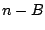
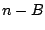

We sometimes need to convert in the other direction, from an audio signal to a sporadic one. To go in this direction, we somehow provide a series of logical times (a time sequence), as well as an audio signal. For output we want a control stream combining the time sequence with values taken from the audio signal. We do this when we want to incorporate the signal's value as part of a control computation.
For example, we might be controlling the amplitude of a signal using a
line~ object as in Example A03.line.pd (Page
 ). Suppose we wish to turn off the sound at a fixed rate
of speed instead of in a fixed amount of time. For instance, we might want to
re-use the network for another sound and wish to mute it as quickly as possible
without audible artifacts; we probably can ramp it off in less time if the
current amplitude is low than if it is high. To do this we must confect a
message to the line~ object to send it to zero in an amount of
time we'll calculate on the basis of its current output value. This will
require, first of all, that we ``sample" the line~ object's
output (an audio signal) into a control stream.
). Suppose we wish to turn off the sound at a fixed rate
of speed instead of in a fixed amount of time. For instance, we might want to
re-use the network for another sound and wish to mute it as quickly as possible
without audible artifacts; we probably can ramp it off in less time if the
current amplitude is low than if it is high. To do this we must confect a
message to the line~ object to send it to zero in an amount of
time we'll calculate on the basis of its current output value. This will
require, first of all, that we ``sample" the line~ object's
output (an audio signal) into a control stream.
The same issues of time delay and accuracy appear as for sporadic to audio conversion. Again there will be a tradeoff between immediacy and accuracy. Suppose as before that we are calculating audio in blocks of 4 samples, and suppose that at logical time 6 we want to look at the value of an audio signal, and use it to change the value of another one. As shown in Figure 3.2 (part b), the most recently calculated value of the signal will be for index 3 and the earliest index at which our calculation can affect a signal is 4. We can therefore carry out the whole affair with a delay of only one sample. However, we can't choose exactly which sample--the update can occur only at a block boundary.
As before, we can trade immediacy for increased time accuracy. If it matters
exactly at which sample we carry out the audio-to-control-to-audio computation,
we read the sample of index 2 and update the one at index 6. Then if we want
to do the same thing again at logical time 7, we read from index 3 and update
at index 7, and so on. In general, if the block size is  , and for any
index
, and for any
index  , we can always read the sample at index  and affect the
one at index
, we can always read the sample at index  and affect the
one at index  . There is thus a round-trip delay of
. There is thus a round-trip delay of  samples in going
from audio to control to audio computation, which is the price incurred for
being able to name the index
samples in going
from audio to control to audio computation, which is the price incurred for
being able to name the index  exactly.
exactly.
If we wish to go further, to being able to specify a fraction of a sample, then (as before) we can use interpolation--at a slight further increase in delay. In general, as in the case of sporadic-to-audio conversion, in most cases the simplest solution is the best, but occasionally we have to do extra work.